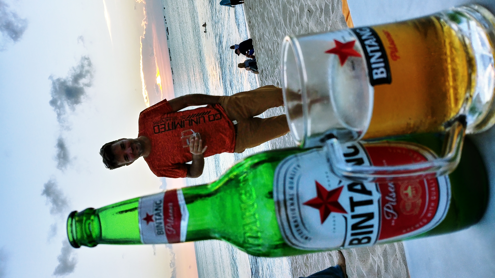

Persönliche Visitenkarte · Bremen
„Vom blinden Willen ins Dasein geprügelt, tapfer gelitten, die Mitmenschen für unerträglich befunden und werde bei Zeiten ins Nichts entfliehen.“
Frei nach Schopenhauer
In Osnabrück ins Leben installiert, am „Gymnasium in der Wüste“ „abituriert“, in Delmenhorst bei der Raketenartillerie marschiert, in Bremen trotz Linker diplomiert, in Oldenburg kurz promoviert. Mit der besten Frau liiert, beruflich wenig orientiert und deshalb letztlich pensioniert.
Am einfachsten erreichst du mich per E-Mail:
Oder lade die Kontaktdaten herunter und speichere sie in deinem Adressbuch.